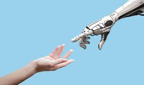

Novas Profissões da Era Digital: O Mercado de Trabalho Entre 2020 e 2025
De 2020 a 2025, o mercado de trabalho passou por uma das transformações mais rápidas da história recente. A pandemia, o avanço da inteligência artificial e a digitalização acelerada criaram profissões que há poucos anos sequer existiam. Hoje, áreas como tecnologia, saúde digital, sustentabilidade e produção de conteúdo online concentram carreiras emergentes e cada vez mais valorizadas.
Cargos como designer de prompts, arquiteto de metaverso, especialista em cibersegurança, gestor de diversidade e técnico em saúde digital mostram como a inovação tecnológica e as novas demandas sociais moldam o futuro do trabalho. Essas funções, muitas vezes híbridas, combinam conhecimento técnico com criatividade, e já se tornaram essenciais para empresas e organizações que desejam se manter competitivas em um mundo em constante mudança.
Mercado de Trabalho na Era Digital
A REVOLUÇÃO PÓS-PANDEMIA
Entre 2020 e 2025, o mercado de trabalho do Brasil e do mundo viveu uma mudança histórica. A pandemia de COVID-19 acelerou a digitalização e impulsionou novas formas de trabalho, como o home office e modelos híbridos. Segundo dados do IBGE, entre os trimestres de janeiro a março e abril a junho de 2020, houve uma queda de 8,9 milhões de trabalhadores no país, equivalente a 9,6% da população ocupada
Além disso, a possibilidade de trabalhar remotamente favoreceu principalmente trabalhadores formais, com nível superior, mulheres e pessoas brancas. Um estudo da Agência Brasil revelou que 40,2% das empresas que passaram a adotar o home office devido à pandemia pretendem mantê-lo permanentemente; 45% também planejam reduzir seu espaço físico após a crise

LEGISLAÇÃO: REVOLUÇÃO TEMPORARIA E REPERCUSSÕES
Em resposta à crise, o governo federal editou a Medida Provisória (MP) 927, flexibilizando regras trabalhistas, incluindo o home office com simples aviso eletrônico. No entanto, a MP expirou em julho de 2020, fazendo com que as regras voltassem a ser regidas pela CLT, exigindo agora aditivo contratual para modalidade de teletrabalho
Posteriormente, o Senado rejeitou em 2021 a MP 1.045, que propunha jornadas reduzidas e contratos especiais para jovens sem vínculo formal — uma tentativa frustrada de institucionalizar novas modalidades trabalhistas
Também é importante lembrar a Lei da Liberdade Econômica (2019), que visava cortar a burocracia e estimular a criação de empregos, embora seu impacto direto no contexto digital tenha sido limitado
Ainda, o sistema eSocial (desde 2015) facilita o registro e envio de informações trabalhistas e fiscais, contribuindo para reduzir a burocracia no novo ambiente digital
PRÓS E CONTRAS DO TRABALHO DIGITAL
Vantagens
- Economia de tempo e dinheiro — Trabalhadores passaram a economizar em deslocamentos e alimentação, melhorando a qualidade de vida. Um estudo global mostrou que, em média, foram economizados 72 minutos diários por trabalhador como tempo de deslocamento.
- Maior autonomia e produtividade — Pesquisas indicam que 63% a 77% dos teletrabalhadores sentiram mais autonomia, enquanto produtividade aumentou.
- Menor risco de contágio — Durante a pandemia, a adoção do teletrabalho ajudou a reduzir a propagação do vírus.
Desvantagens
- Aumento de custos domésticos — 67,6% dos entrevistados relataram aumento de despesas em casa com luz, internet e estrutura de trabalho.
- Isolamento e desmotivação — O trabalho remoto pode reduzir a motivação interna, principalmente em atividades que exigem colaboração, reconhecimento e variedade de tarefas.
- Cansaço digital (Zoom fatigue) — Síndrome que inclui fadiga visual, dores musculares e exaustão emocional, exacerbada por longas videoconferências.
- Privacidade e segurança — Empresas passaram a monitorar funcionários à distância, levantando questões éticas e de proteção de dados; essas práticas tensionam segurança e privacidade.
A QUEM BENEFICIOU (E QUEM SOFREU)
Beneficiados
- Profissionais do setor digital — Designers de prompts, especialistas em cibersegurança, gestores de diversidade e técnicos em saúde digital viram suas carreiras decolarem.
- Trabalhadores formais e bem-qualificados — Com melhor acesso a tecnologia e condições de trabalho remoto, ganharam mais autonomia e segurança.
- Empresas que adotaram o modelo híbrido — Reduziram custos com infraestrutura e mantiveram produtividade.
Prejudicados
- Informais e trabalhadores presenciais — Trabalhadores que exercem atividades manuais, em serviços essenciais e informais, que não podem ser remotos, sofreram mais, com altas taxas de desemprego.
- Trabalhadoras domésticas — Muitas foram demitidas ou pressionadas a continuar sem proteção adequada durante a pandemia; movimentos como o "Entregadores Antifascistas" (motoboys e entregadores) denunciaram condições precárias.
- Jovens sem carteira assinada e com menos escolaridade — Ficaram à margem do teletrabalho, e sofreram rejeição da MP que buscava vinculá-los a novas formas de emprego.
CONCLUSÃO
O período entre 2020 e 2025 consolidou a transformação digital como vetor estruturante do mercado de trabalho. A pandemia acelerou mudanças que já vinham emergindo, criando oportunidades inéditas, especialmente para trabalhadores qualificados e formais. Ao mesmo tempo, escancarou desigualdades: uma parcela da população — em sua maioria mulheres, jovens, negros, informais — foi deixada para trás.
No plano legislativo, medidas emergenciais como a MP 927 marcaram a urgência da adaptação, mas seu caráter transitório evidenciou os limites de uma solução imediatista. O debate sobre o futuro das relações de trabalho permanece aberto e urgente.
Entrevista – “O Trabalho de Influenciador Digital”
Repórter: Como era o trabalho de divulgar produtos e informações antes das redes sociais?
Entrevistado: Antigamente, a divulgação era feita quase toda por TV, rádio e jornais impressos. Era um processo mais lento e distante. Só empresas grandes ou famosos tinham espaço para aparecer, e a comunicação com o público não era tão direta como é hoje.
Repórter: E qual é a importância desse trabalho nos dias de hoje?
Entrevistado: Hoje, ser influenciador é importante porque conseguimos falar diretamente com um público específico e de forma mais próxima. Também ajudamos a divulgar novidades, tendências e até causas sociais, o que dá mais voz para assuntos importantes.
Repórter: Quais mudanças você percebeu com o passar do tempo?
Entrevistado: A principal mudança foi a rapidez da comunicação e a interação com as pessoas. Agora qualquer um pode criar conteúdo e se tornar referência em um assunto. Também precisamos dominar redes sociais, edição de vídeos e marketing digital. E, diferente de antes, o público valoriza mais a autenticidade do que anúncios muito formais.